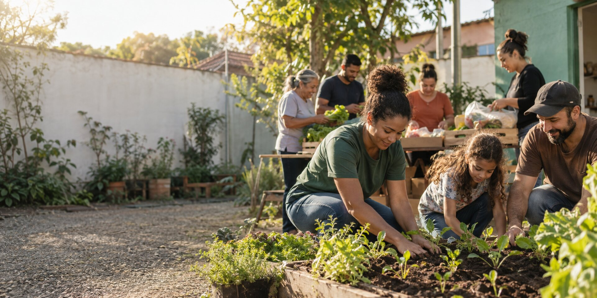

Educação e cultura
Leitura, reforço escolar e oficinas criativas para crianças e adolescentes.

Pessoas cuidando de pessoas
Unimos educação, segurança alimentar e participação comunitária para construir oportunidades que permanecem.
Quem somos
O Instituto Semente Viva é uma organização social independente que fortalece comunidades por meio de iniciativas construídas com quem vive o território.
Nossa missão é ampliar o acesso a direitos, conhecimento e alimentação de qualidade, sempre com escuta, transparência e respeito à autonomia de cada pessoa.
Veja como atuamosFrentes de atuação
Projetos conectados para responder a necessidades reais e gerar autonomia.
Leitura, reforço escolar e oficinas criativas para crianças e adolescentes.
Hortas comunitárias, cestas frescas e formação sobre aproveitamento integral.
Capacitação, orientação profissional e redes de apoio ao empreendedorismo local.
Faça parte
Doe tempo, conhecimento ou recursos. Toda colaboração fortalece uma rede que já está transformando o território.
Contato
E-mail
contato@sementeviva.org.br
Telefone
(41) 99999-9999
Endereço
Rua das Araucárias, 120 — Centro
Curitiba — PR